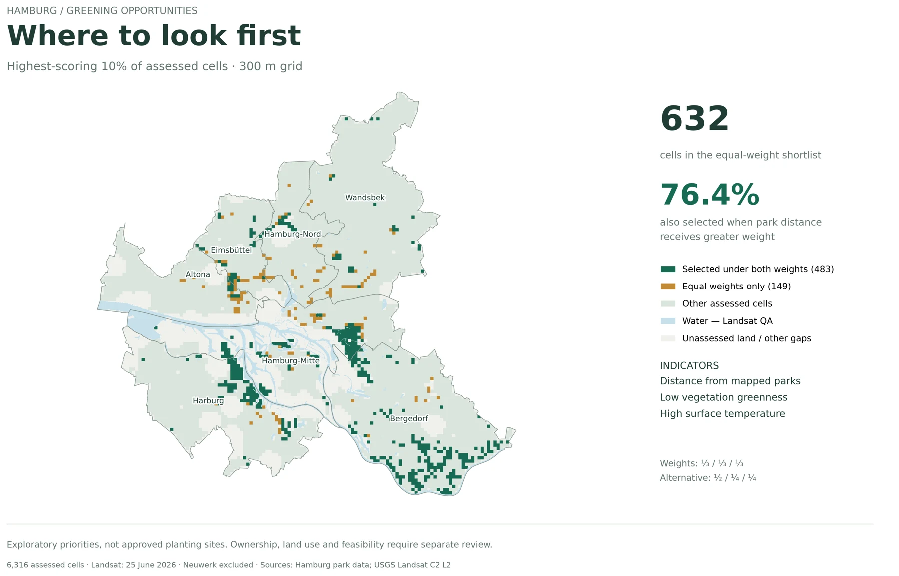
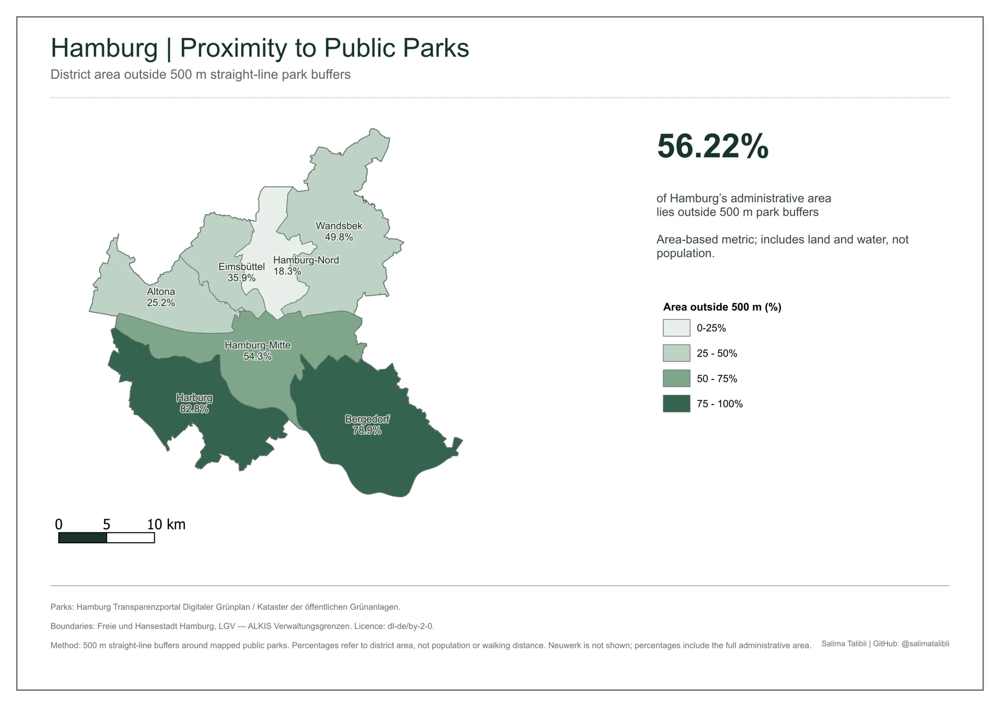
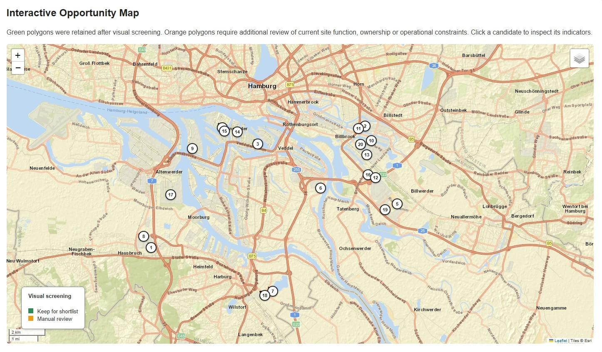

Understanding places.
Mapping possibilities.
I’m Salima. I use GIS, Python and satellite imagery to study where cities could add green space, how surface temperatures vary across streets and how spatial data can inform wind-energy site selection.

Four projects.
Three places.
Explore green-space planning in Hamburg, satellite-derived surface temperatures in Nürnberg and wind-energy site assessment in Ansbach.

Where could Hamburg
become greener?
Connecting park proximity, vegetation greenness and surface temperature to identify areas for further investigation.
632 priority cells · 76.4% remain shortlisted under alternative weights.
Read the case study →
From parking lots
to possibilities.
Screening surface-parking sites using green-space need, heat, site size, surrounding development, transit and land values.
5,436 candidates assessed → a geographically diversified shortlist of 20.
Read the case study →
Where were Nürnberg’s
road corridors warmest?
A Landsat 9 observation from 26 August 2025 captures how land surface temperature varied across the city. Explore temperatures sampled within 15 metres of mapped roads and compare summaries for 89 statistical districts.
36.92 °C · Gugelstraße had the highest district mean in the preliminary ranking for this overpass.
Where could wind energy
fit in Ansbach?
A GIS site-assessment project exploring candidate locations for wind energy in the Ansbach region. The project documentation brings together the data sources, screening methodology and site-level metrics.
How to explore the assessment
Start with the project overview, then use the methodology to interpret the candidate metrics. The data-source notes provide context for the inputs used in the assessment.
From data
to a clearer map.
I’m a student based in Germany, developing my GIS and Python practice through applied geospatial projects.
My focus is on making spatial analysis understandable: preparing data carefully, choosing transparent methods, checking results and communicating what a map can—and cannot—tell us.
Spatial analysis
Buffer analysis, proximity measures, spatial joins, geometry validation and multi-criteria screening.
Python & data
GeoPandas, pandas, NumPy, Rasterio, Shapely and documented Jupyter workflows.
Remote sensing
Landsat quality masking, NDVI, land surface temperature and grid aggregation.
Communication
QGIS layouts, Matplotlib figures, Folium and Leaflet maps, and clearly stated limitations.
Interested in my work?
I’m interested in student and entry-level opportunities involving GIS, geospatial data and environmental analysis.